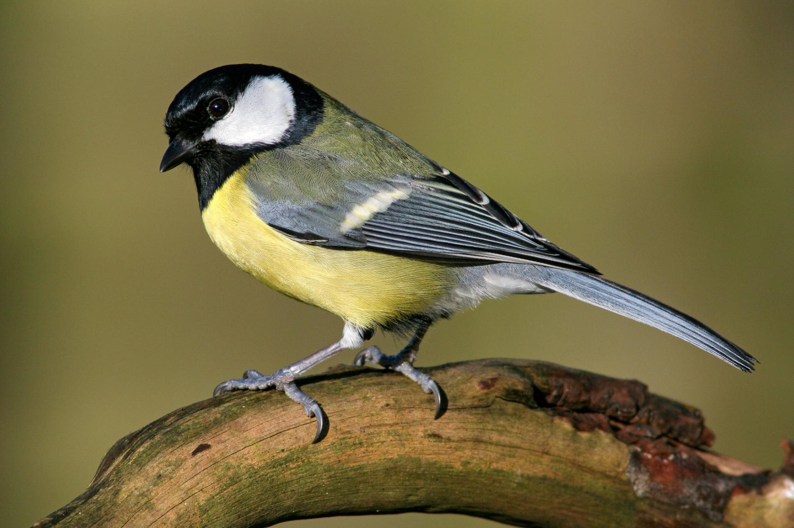

 The largest UK tit, with a distinctive two-syllable song. The crown, nape and throat are black. The cheeks are white. The breast and belly are yellow with a black stripe down the centre. There is a white wing bar across the blue-grey wings. The back is a yellowish-green and the rump is blue-grey. Legs are grey-blue and the bill is black. It is a woodland bird which has readily adapted to man-made habitats to become a familiar garden visitor. It can be quite aggressive at a birdtable, fighting off smaller tits. In winter it joins with blue tits and others to form roaming flocks which scour gardens and countryside for food.
Great tits feed on insects, such as caterpillars and spiders, seeds, like beech mast, and berries. Like blue and coal tits, great tits make quick visits to bird feeders containing nuts and seeds, such as sunflower hearts, or on kitchen scraps from bird tables. They sometimes follow Coal Tits to their caches of seeds in the hanging baskets, etc. for seeds and fat.
Woodland, Farmland, Urban and suburban
Great tits can be seen in woodlands, parks and gardens across the UK. Absent only from the Northern and Western Isles of Scotland.
Great Tits can be seen all year round.